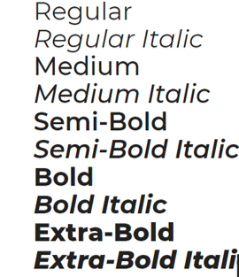

I had a very hard time picking a font that I felt was professional, but didn't feel like you were reading a webpage from the 90's. Ultimately I decided that I liked the idea of doing 2 forms of the same font. Montserrat is profession without feeling stiff. For the headers I will be using the extra-bold italic and for the other places I will be using the regular form of this font.
@import url('https://fonts.googleapis.com/css?family=Montserrat:400,800i&display=swap'); font-family: 'Montserrat', sans-serif;
